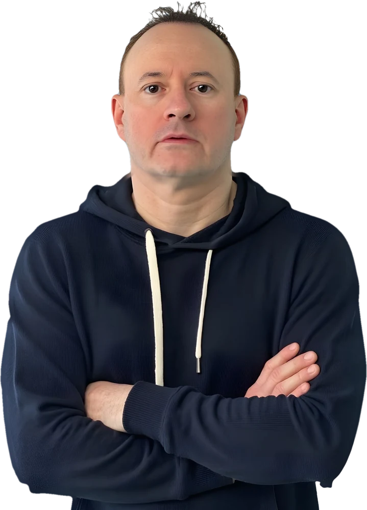

Interim transformation
Leading carve-outs, post-merger integration and enterprise change: finance separation, ERP and data migration, operating model design. I stay until the work is done, then make a clean exit.

AI-fluent data and transformation leader. I help leadership teams turn strategy into delivered results.
Most organisations already have the tools and the ambition. What's missing is clarity on where to focus and the right mix of people, AI and programme delivery to get there. I join your team as an AI-fluent fractional leader, work out what matters and see it through until your people can run it without me.
Leading carve-outs, post-merger integration and enterprise change: finance separation, ERP and data migration, operating model design. I stay until the work is done, then make a clean exit.
I know where AI creates real value and where it doesn't, and how to weave it into strategy and decisions rather than bolt it on. I bring it into the workflows you already run and build it around a real business problem.
Part-time C-suite leadership for your technology, data and AI. I set the strategy, put governance and data foundations in place, and steer delivery, so AI adoption is defensible, not just impressive in a demo.
Extra bandwidth for sponsors to deliver a plan that's already built. Bring me in early rather than as a last resort, or mid-programme when the direction needs a reset, and I'll drive it to the finish.
Started as a developer, but a manager at heart: a safe pair of hands at C-suite level, with vast experience across everything below.
Platforms
AI
Integration
Data & Reporting
Transferable skills and a firm understanding of business, from pharma to pest control, mean I can step into vastly different sectors and deliver.
Health, consumer and public services
Technology and industry
Private equity
EQT · Partners Group · Providence · TPG Capital · CPPIB · Leonard Green & Partners